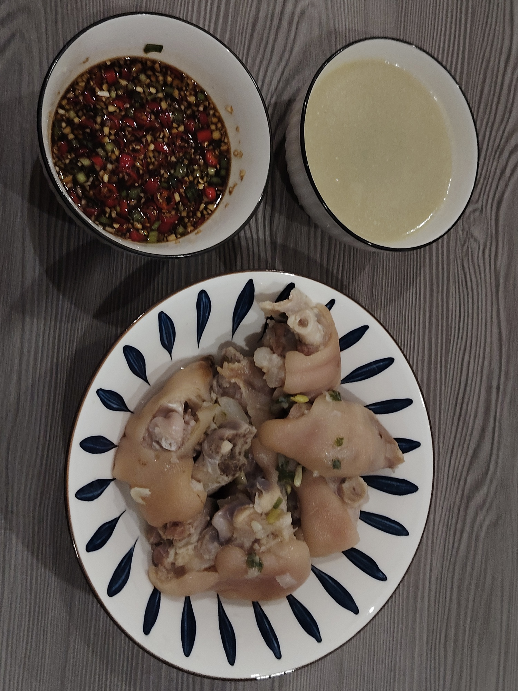

老妈蹄花的做法
红烧猪蹄营养丰富，口感细腻，软烂脱骨，配上酸辣汁简直太香！
预估烹饪难度：★★★★
必备原料和工具
- 猪蹄（尽量选择猪前蹄：肉多筋多骨头少）
- 葱
- 姜
- 料酒
- 生抽
- 白芷
- 当归（可选）
- 鸡精
- 盐
- 蒜
- 小米椒
- 白胡椒粉
- 生抽
- 香醋
- 花椒油
- 油泼辣子（可选）
- 白芸豆（没有可用海带）
计算
- 猪蹄：3 根
- 白芸豆：200g
- 当归：2g
- 白胡椒粉：5g
- 姜片：30g
- 当归：2g
- 蒜末：8g
- 鸡精：2g
- 生抽：25g
- 葱花：10g
操作
开始制作
- 200g 白芸豆提前一晚清水浸泡备用
- 准备猪前蹄，买菜的时候让师傅从中间劈开，用喷火枪去除毛囊，拿回家清洗
- 冷水锅中加入猪蹄、大葱段、姜片、料酒，焯水十分钟，撇去浮沫，捞出洗干净备用
- 高压锅中放入猪蹄、当归、白芷、白胡椒粉、姜片，上汽后压三十分钟，放入白芸豆，再压十分钟，这个时候如果汤底是奶白色，那么恭喜是正确的（如果中途需要加水，只能加热水）
- 揭盖后加入盐、鸡精、葱花调味
- 调制灵魂汁子：放入葱、蒜、小米椒，白胡椒粉、生抽、香醋、油泼辣子、花椒油、猪蹄原汤 
- 灵魂汁子，浇给
附加内容
如果您遵循本指南的制作流程而发现有问题或可以改进的流程，请提出 Issue 或 Pull request 。